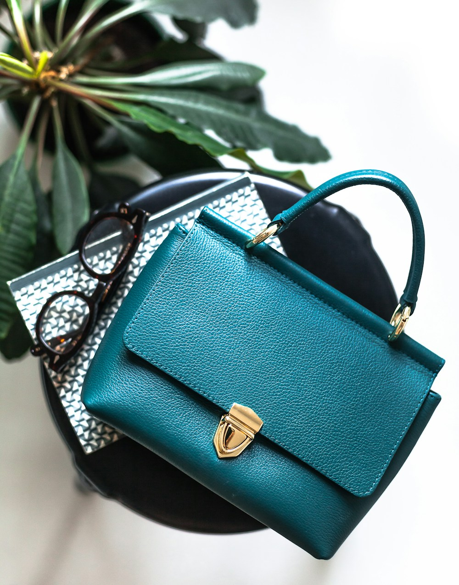

1. The Expanding Secondary Market and the Necessity of Rigorous Authentication
The global luxury handbag market has undergone an unprecedented transformation over the past decade. As premier luxury bags increasingly achieve the status of alternative investment-grade asset classes—frequently outperforming equities and precious metals at international auction houses like Sotheby's and Christie's—the sophistication of counterfeit goods (often termed "super-fakes") has reached alarming heights.
Modern counterfeit syndicates utilize computerized laser scanners, high-precision hydraulic stamping dies, and synthetic chemical perfumes that mimic the scent of vegetable-tanned leather. Consequently, superficial visual inspection is no longer adequate for discerning collectors. Authentic connoisseurship demands a forensic understanding of micro-artisanal indicators: stitch slant angles, foil debossing heat dynamics, thread composition, metallurgical spectroscopy, and leather grain pore biology.
2. Forensic Marker 1: The Geometry of the Hand Saddle Stitch
The most infallible forensic differentiator between an authentic handcrafted artisanal bag and a counterfeit replica lies in the micro-geometry of its stitching. High-end automated sewing machines produce perfectly straight, parallel stitch lines with symmetrical tension on both faces. In stark contrast, genuine hand saddle-stitching exhibits subtle, unmistakable artisanal signatures:
The Hand-Stitching Forensic Checklist:
• The Pricking Iron Angle: Hand stitches follow the 30-degree slanted orientation dictated by the French pricking iron (griffe à frapper), creating a distinctive slanted "herringbone" or "caterpillar" trajectory.
• Asymmetry Between Front and Reverse: Because the needle enters at an angle and exits on the reverse side, the stitch angle on the backside is slightly more pronounced than on the front—an organic geometric asymmetry that no computerized machine can replicate.
• Beeswax Residue & Linen Texture: Under 30x optical magnification, authentic French linen thread (Fil Au Chinois) displays natural flax fiber bundles coated in micro-crystalline organic beeswax rather than the smooth, extruded plastic uniformity of nylon.
| Inspection Dimension | Authentic Haute Maroquinerie | Industrial Counterfeit ("Super-Fake") |
|---|---|---|
| Stitch Slant Geometry | Consistent 30° slant; organic tension variance | Completely straight or artificially stamped slant |
| Hot-Stamp Debossing | Deep crisp impression; 22k gold leaf fused into grain | Surface ink print or shallow, smudged foil stamp |
| Hardware Weight & Material | Substantial solid brass; non-magnetic; crisp engraving | Lightweight hollow zinc alloy; magnetic core; rounded engraving |
| Leather Grain Pores | Natural irregular hair follicles under magnification | Repetitive synthetic roller-embossed grain pattern |
3. Forensic Marker 2: The Typography of Heat-Debossed Foil Stamping
The hot-stamped maker's mark on the interior plaque or exterior face is another critical authentication checkpoint. Genuine luxury maisons utilize custom brass typography cut by hand in Paris or Milan. When applying gold or palladium foil:
The artisan heats the brass type to exactly 135°C and presses it into the leather with calibrated hand pressure for 2.5 seconds. The gold leaf melts directly into the porous collagen fibers of the leather grain. The resulting deboss is crisp, deep, and perfectly uniform, with razor-sharp serifs that do not bleed, halo, or flake when scraped with a gentle fingernail test. Counterfeit stamps, by contrast, sit loosely on the surface of synthetic polyurethane finishes and chip away rapidly.
4. Forensic Marker 3: Metallurgical Density and Acoustic Signature
Counterfeiters invariably cut costs on hardware metallurgy. While authentic Velvet Tote Beam hardware is CNC-machined from solid brass ingots, replicas rely on die-cast Zamak alloys with flash-plated nickel finishes. To authenticate hardware:
- The Magnet Test: Solid brass and high-grade 316L stainless steel are completely non-magnetic. If a rare-earth neodymium magnet adheres to a zipper pull or buckle, the hardware contains cheap ferrous metals.
- Acoustic Resonance: Tapping a solid brass closure produces a clear, high-pitched musical ring that resonates for several seconds. Zinc alloys emit a dull, muted "clunk."
- Micro-Chamfering: Genuine hardware features hand-polished 45-degree chamfers along every edge, eliminating sharp burrs that could fray thread or scratch leather.
5. Forensic Marker 4: Olfactory Analysis and Tannery Chemistry
The human olfactory system is an extraordinarily sensitive analytical tool. Authentic vegetable-tanned Italian calfskin possesses a warm, earthy, sweet scent derived from natural mimosa, chestnut, and quebracho bark tannins combined with pure beeswax. This aroma is subtle, comforting, and enduring.
Counterfeit bags, even those utilizing genuine leather, inevitably emit a harsh, pungent chemical odor resulting from rapid formaldehyde-based chrome baths, volatile organic solvent glues (toluene), and synthetic petroleum-based edge lacquers. If a bag smells intensely of plastic or chemical solvent, its provenance is fundamentally compromised.
6. Provenance Archiving and the Maison Certificate of Authenticity
Every Velvet Tote Beam creation is assigned a unique alphanumeric serial register hand-stamped onto an internal calfskin tag concealed beneath the interior zippered pocket. This code corresponds to our permanent master ledger in New York, documenting the date of creation, master artisan signature, leather batch lot, and original commissioning patron.
6. Optical Spectroscopy and Fiber Analysis of Silk Velvet
For high-value archival acquisitions, advanced collectors and auction house specialists frequently deploy non-destructive optical Fourier-Transform Infrared (FTIR) spectroscopy to authenticate textile composition. Genuine Venetian silk velvet displays characteristic amide I and amide II absorption bands at 1650 cm⁻¹ and 1530 cm⁻¹, confirming pure fibroin protein structure.
Counterfeit bags constructed from petroleum-based polyester or polyamide display sharp ester carbonyl peaks at 1715 cm⁻¹. Furthermore, under polarized light microscopy, natural silk filaments reveal irregular triangular cross-sections that refract light like microscopic prisms—accounting for the lush, shimmering luster that flat synthetic fibers can never emulate.
7. The Ledger of Provenance: Guarding Heirloom Value
In the world of high-end horology and fine art, provenance documentation can account for up to 40% of an object's secondary auction value. Maison Velvet Tote Beam maintains a physical and cryptographic ledger system in New York. Every bag's internal serial plaque links to archival records documenting hide batch origin, tanning dates, master artisan signatures, and client custody transfers, providing ironclad investment security for generational heirs.
7. Frequently Asked Questions on Authentication
8. Conclusion: Safeguarding the Integrity of Luxury
True luxury is defined by transparency, uncompromising craftsmanship, and verifiable provenance. By training your eye to recognize the subtle nuances of hand-saddle stitching, solid brass metallurgy, and noble leather chemistry, you become an enlightened custodian of artisanal heritage, immune to the deceptions of the counterfeit trade.